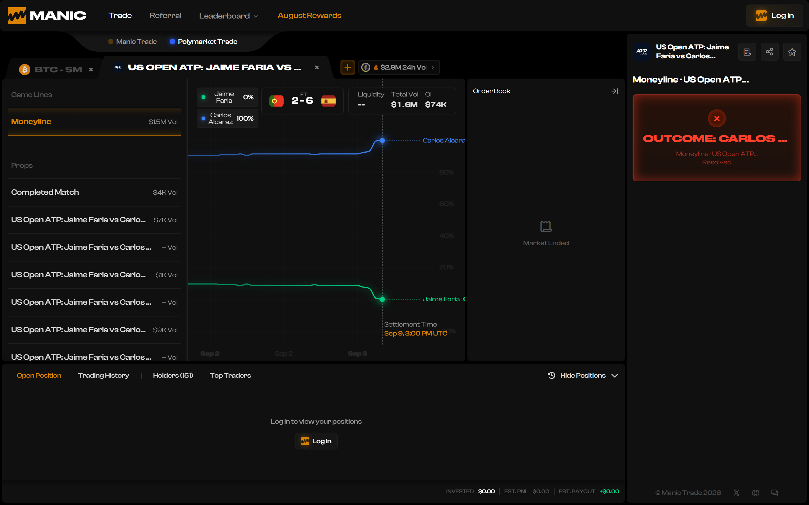
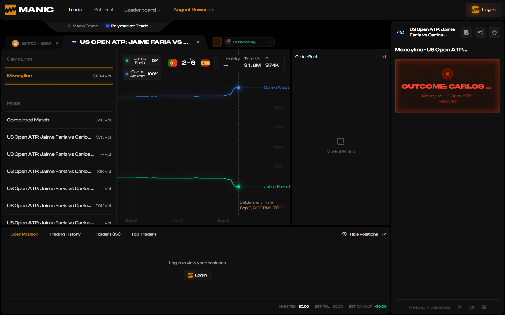
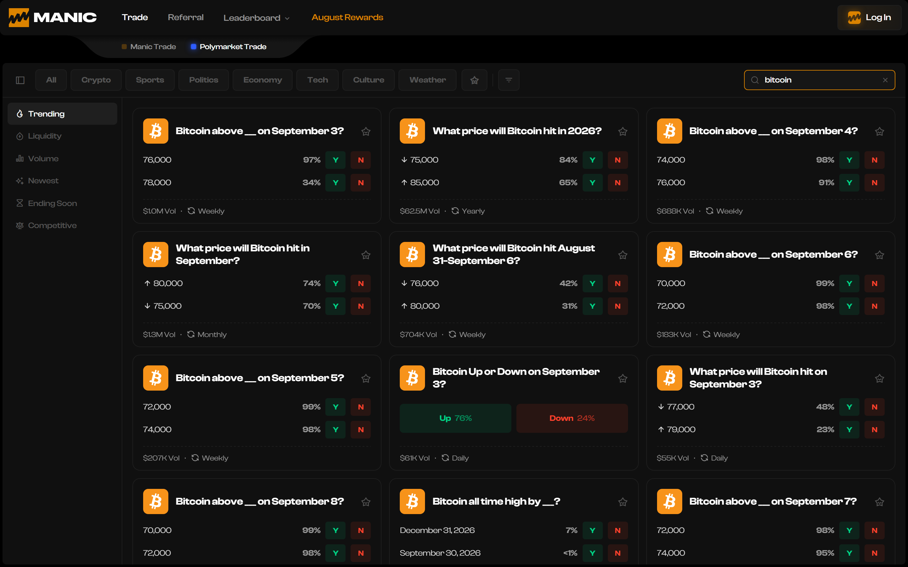
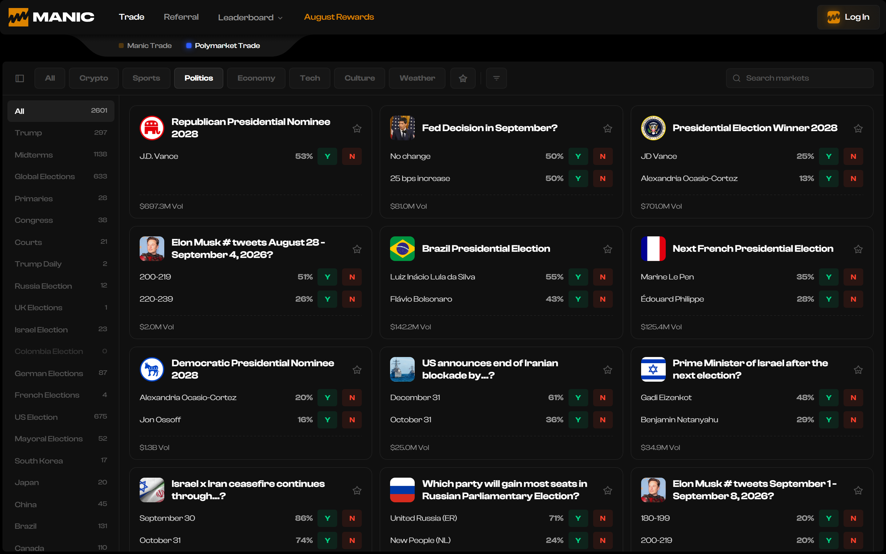
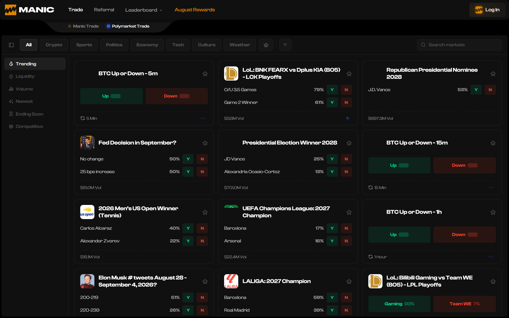
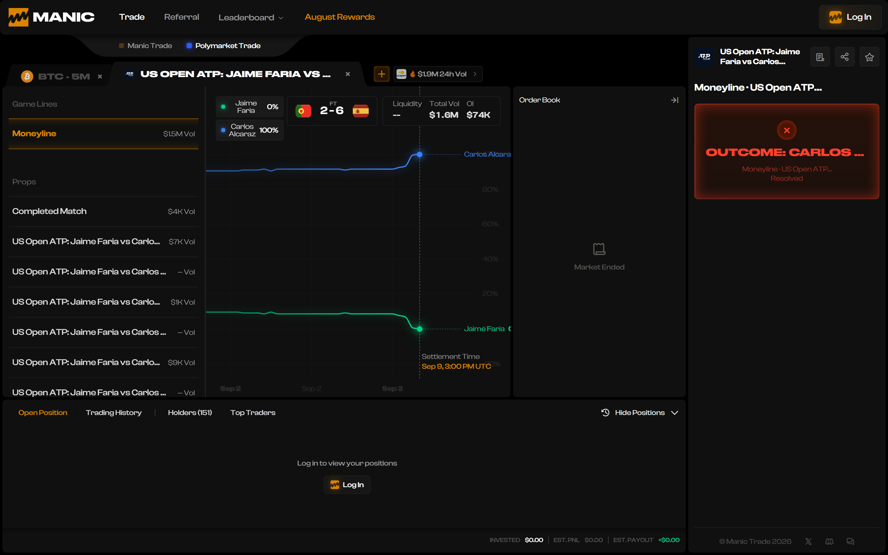
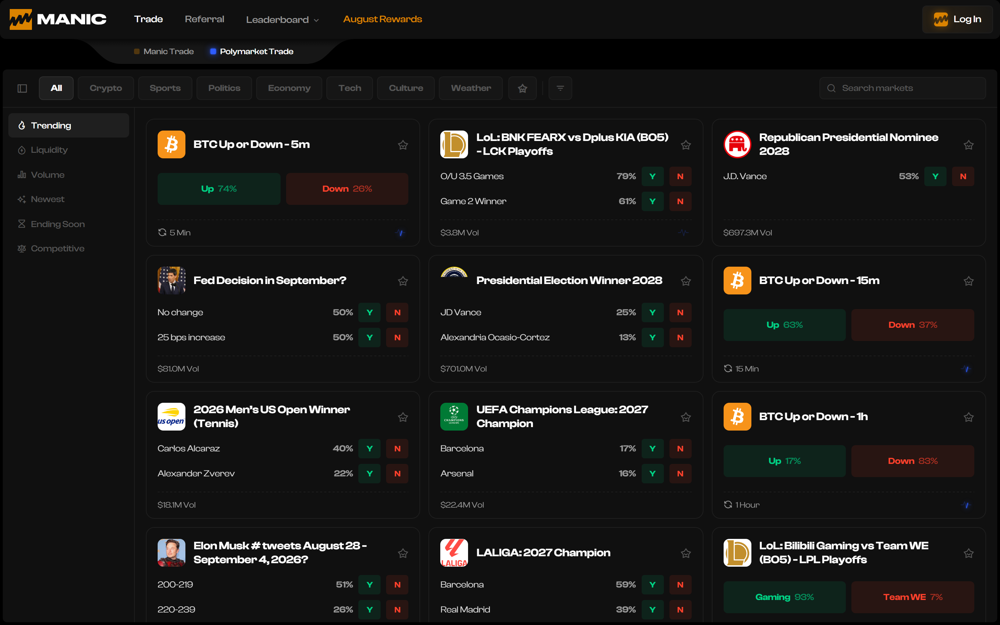

Eight screenshots and one measurement file, captured by a Playwright script against the live application rather than by hand. Each image is the unedited frame the script took; each number underneath was read from the same page in the same run. The written report is at huntstamp-findings.vercel.app.
Manic shipped a new deployment partway through the session. Everything on this page comes from the newer build.
| Field | Value |
|---|---|
| build | dpl_C3bXHquKbKr1sjn9WpRtDt8MWfce |
| capture window | 2026-09-03T09:46:27Z → 09:47:53Z |
| viewport | 1440 × 900 at 2× device pixel ratio, plus 375 × 812 for the mobile frame |
| session | Logged out, no wallet, no funds |
| capture script | capture-evidence.js, Playwright with headless Chromium |
Findings were first observed on an earlier build through an instrumented browser. This automated pass re-checked them. Two did not hold, and one was withdrawn outright.
| Finding | Status | Measured this run |
|---|---|---|
| F-01 | Holds | Requested /pm, landed on /pm/event/atp-faria-alcaraz-2026-09-02 |
| F-03 | Holds | Sep 9, 3:00 PM UTC · resolved true · marketEnded true · score 2 - 6 |
| F-12 | Holds | Both search inputs read "" after the category click |
| F-16 | Holds | Nav reads August Rewards at 2026-09-03T09:46:37Z |
| F-07 | Holds, larger | 48 prop rows prefixed with the event title, not 26 |
| F-08 | Holds | 13 rows rendering -- Vol |
| F-09 | Holds | 1 unused preloaded asset, warned 16 times in one load |
| F-11 | Holds | Both J.D. Vance and JD Vance present |
| F-15 | Count unstable | 19 zero-size focusable controls this run, 58 earlier; 21 of 23 images without alt |
| F-02 | Not reproduced | Both readouts agree at 0% / 100%; the 9% / 92% legend is gone |
| F-06 | Not reproduced | 33 percentages, none carrying a decimal |
| F-10 | Withdrawn | loadEventEnd 1,581 ms — see below |
I measured the /pm load event at 94,029 ms and then 135,689 ms through an instrumented browser pane, and wrote it up as a performance defect. This automated run, on the same machine and the same connection, loaded the same route with loadEventEnd at 1,581 ms — time to first byte 57 ms, DOMContentLoaded 1,193 ms, the same 115 JavaScript chunks.
The slow figures came from my test environment. The bounty excludes issues caused by the reporter's own device or network, and it is right to exclude this one. It is recorded here rather than deleted, because a reviewer is owed the failures as well as the findings.
Unedited screenshots. No annotation has been added to any image; the numbers sit underneath rather than on top of them.

The match was played on 2 September, which the event slug itself records. The page shows the final score, marks the market Resolved, closes the order book — and still advertises a settlement six days after the date of capture.
settlementTime : "Sep 9, 3:00 PM UTC"
resolved : true
marketEnded : true
score : "2 - 6"
eventSlugDate : "2026-09-02"
The script cleared nothing and simply requested /pm, the URL named in the bounty brief. A stored tab in localStorage reopened the previously viewed event and rewrote the address bar. Removing the key restores the directory, which is what identifies the cause rather than the symptom.
requested : "/pm"
landedOn : "/pm/event/atp-faria-alcaraz-2026-09-02"
storedStateBefore :
{"state":{"category":"all","surface":"catalog",
"openEventIds":["atp-faria-alcaraz-2026-09-02"], …}}
The query is in the box and the grid has narrowed to match it.

One click on a category chip empties the search field and discards the query. Read back from the DOM immediately afterwards, both search inputs return an empty string.
searchValuesAfterCategoryClick : ["", ""]
Captured with the browser clock inside the same run, so the date and the label are from one moment rather than two.
navText : "August Rewards"
clockNow : "2026-09-03T09:46:37.315Z"
Every prop label repeats the full event title before the part that identifies it, and the rail truncates exactly where the distinguishing text begins.
propsPrefixedWithEventTitle : 48
sample : "US Open ATP: Jaime Faria vs Carlos Alcaraz Set 1 Winner"
"US Open ATP: Jaime Faria vs Carlos Alcaraz Set 1 O/U 8.5"
The context frame for the grid findings: resolved markets carried with live buy buttons, and the same candidate spelled two ways on two cards visible at once.
dottedSpelling : true ("J.D. Vance")
plainSpelling : true ("JD Vance")At this width the subcategory rail scrolls horizontally and the selected filter can sit off-screen, so an empty result gives no visible cause and no control to undo it.
Every image on this page was written to disk by capture-evidence.js driving headless Chromium against app.manic.trade. Nothing was cropped, annotated, composited or retouched. The measurements printed under each frame were read from the same page during the same run and stored in measurements.json beside the images.
The testing was AI-driven rather than manual. That is stated plainly on every submission, because the findings stand on reproduction steps that Manic's own team can run, and a method discovered later reads as concealment.
What no script could supply: deposits, order placement, positions, balances and settlement crediting all need a funded account with real USDC at risk. None of that was exercised, and that is where this bounty's P0 weight sits.